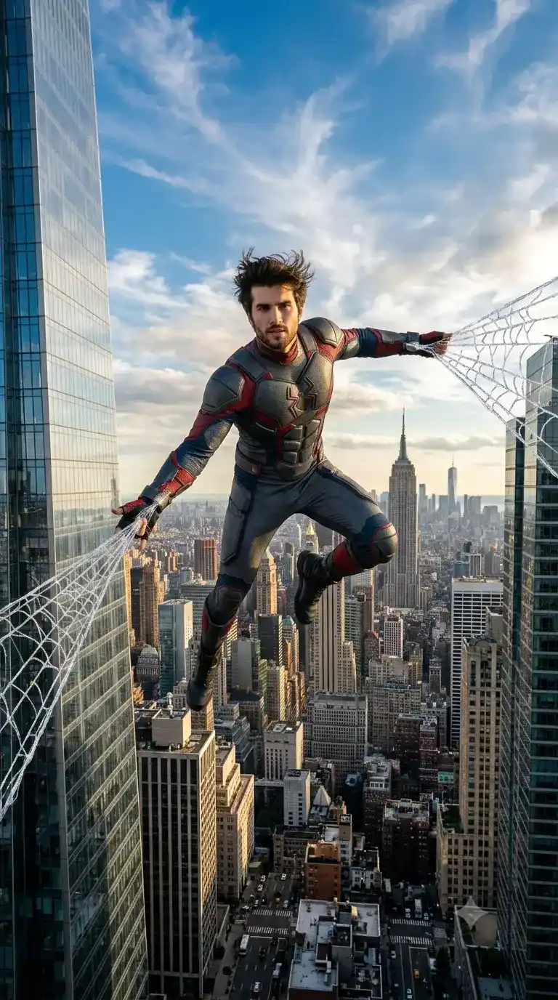

Gemini Watermark Remover — Remove Gemini Watermarks from Images & Videos Free
The most powerful free Gemini Watermark Remover to instantly remove Google Gemini watermarks from AI-generated images. Also works as a Gemini Video Watermark Remover for Veo 3, Google Flow & Omni videos. Uses inverse alpha compositing for pixel-perfect mathematical restoration — no blur, no AI guessing, no quality loss. Runs entirely in your browser.
Import or drag your Gemini AI image to remove the watermark
Accepts PNG, JPG, WebP
How to Use the Gemini Watermark Remover in 3 Steps
Whether you need the Gemini Video Watermark Remover to clean Veo 3 clips or the image mode to remove Gemini watermarks from photos, follow these 3 straightforward steps for pristine, blur-free results.
Import Your File
Drag and drop or browse to select your Google Gemini AI image or video file into the Gemini Watermark Remover.
Calibrate & Preview
Fine-tune the strength and position sliders. Use the dual zoomed preview windows for pixel-accurate watermark alignment.
Export Pristine Media
Click Remove & Export to download your Gemini watermark-free file locally with zero quality degradation.
Gemini Watermark Remover: Before & After Results
Unlike blurry AI inpainting, our Gemini Watermark Remover uses inverse alpha compositing — the exact mathematical reverse of Google's blending process — to subtract the transparent sparkle mask pixel-by-pixel, recovering 100% of the underlying original image data.

Two Ways to Remove Google Gemini Watermarks
Learn how to use our Gemini Watermark Remover to remove watermarks from existing media instantly, or disable them for future AI creations via Google's account settings.
Remove Watermarks from Existing Gemini Images & Videos
For already-saved Google Gemini (Imagen 3) photos or Veo 3 AI videos, use this free Gemini Watermark Remover to mathematically restore original pixels beneath the sparkle logo with zero blur.
-
1
Import Media: Drag & drop your Gemini image (PNG, JPG, WebP) or Veo 3 video (MP4, MOV) into the Gemini Watermark Remover panel above.
-
2
Inverse Alpha Compositing: Our engine applies the reverse blending formula to mathematically subtract the watermark without any AI guesswork.
-
3
Export Clean File: Click Erase & Export for a 100% original quality download processed entirely within your browser.
Disable Watermarks for Future AI Generations
If you create new images inside Google Gemini on the web, you can toggle off the visible watermark in your Google account settings going forward.
-
1
Open Gemini Web: Navigate to gemini.google.com and sign in to your account.
-
2
Access Settings: Click on the Settings gear icon (
) in the navigation menu. -
3
Toggle Off: Under Media watermark, switch the visible watermark option to Off.
Visible Gemini Sparkle vs SynthID Invisible Fingerprint
Understanding Google's dual-layer AI content identification system
The semi-transparent white four-point sparkle icon rendered in the corner of AI-generated images and Veo videos. This is the overlay that our eraser removes through precise mathematical reconstruction with zero quality loss.
An invisible cryptographic watermark developed by Google DeepMind, embedded directly into pixel noise and audio spectrograms for AI provenance detection. It has no visual impact on your content whatsoever.
Google AI Models Supported by Our Gemini Watermark Remover
Our Gemini Watermark Remover engine is precisely calibrated for the visible watermark patterns across Google's complete generative media ecosystem, including the Gemini Video Watermark Remover for all video formats.
Google Gemini "Nano Banana"
Widely known in developer circles as "Nano Banana," Google's conversational image generator applies a semi-transparent four-point sparkle watermark. Our Gemini Watermark Remover reverses the exact alpha blending mathematics to recover every original pixel with absolute clarity.
Adaptive inset & corner watermark detection Zero blur, zero AI hallucination artifacts Instant lossless PNG export
Google Flow Studio Videos
Google Flow is the creative workspace for directing AI-generated scenes, combining Veo video generation with audio tracks. Flow exports carry visible corner logos that can detract from your creative vision. Our Gemini Video Watermark Remover processes every frame locally in your browser.
Frame-by-frame mathematical restoration Hardware-accelerated WebCodecs pipeline Complete audio track preservation
Gemini Omni Video Outputs
Google DeepMind's native multimodal Gemini Omni models deliver "Any-Input-to-Video" capabilities with conversational video manipulation. Video clips from Gemini Omni feature visible sparkle overlays that our Gemini Video Watermark Remover engine removes with zero blur.
Compatible with conversational video edits Real-time interactive tuner with dual preview 100% private with zero cloud uploads
Google DeepMind Veo / Veo 3
DeepMind's state-of-the-art cinematic video generation model produces stunning 1080p clips with corner watermark branding. Our Gemini Watermark Remover decodes each frame, removes the watermark mask mathematically, and re-encodes pristine video.
Full support for Veo 2 and Veo 3 outputs Lossless mathematical pixel reconstruction Completely free with no subscriptions
Gemini Video Watermark Remover — Remove Watermarks from Gemini Omni, Flow & Veo 3 Videos
Need a fast, free Gemini Video Watermark Remover? Our browser engine applies inverse alpha compositing to remove watermarks from Flow, Gemini Omni, and Veo 3 AI videos frame-by-frame while fully preserving the original audio track and resolution.
Activate the Video Eraser tab above or click the button below to open the video canvas.
Drag and drop your Google Flow, Gemini Omni, or Veo 3 AI video (MP4, WebM, MOV formats supported).
GPU-accelerated WebCodecs decodes every frame, erases the watermark overlay, and preserves the original audio track intact.
Export your crystal-clear, watermark-free video directly to your device with zero server uploads.
Why Choose Our Gemini Watermark Remover?
100% Private & Local Processing
Every pixel is processed entirely inside your browser using HTML5 Canvas and WebCodecs APIs. Your images and videos never leave your device — zero cloud uploads, ever.
Mathematical Precision, Zero Blur
Uses inverse alpha compositing — the exact reverse of Google's blending formula — instead of AI guesswork. Recovers 100% of your original pixel clarity without any smudging.
Gemini Video Watermark Remover
Remove watermarks from Gemini Omni, Google Flow & Veo 3 video clips with rapid frame-by-frame processing while fully preserving original audio tracks.
Interactive Tuner & Dual Preview
Adjust strength, scale, and offset in real-time. Side-by-side zoomed original and cleaned preview windows enable pixel-perfect watermark alignment.
Broad Format Compatibility
Works seamlessly with PNG, JPG, WebP images and MP4, WebM, MOV video formats. Processed files download instantly to your device.
Completely Free, No Strings Attached
No registration required, no subscription fees, no processing limits, and we never stamp our own watermark on your exported files. Truly free.
Gemini Watermark Remover — Frequently Asked Questions
Everything you need to know about our free Gemini Watermark Remover and Gemini Video Watermark Remover tools.
01
How do I use the Gemini Watermark Remover to remove watermarks?
02
Does the Gemini Watermark Remover work on "Nano Banana" images?
03
Can I use the Gemini Video Watermark Remover for Google Flow and Gemini Omni videos?
04
How does the Gemini Watermark Remover mathematically remove watermarks?
Original = (Watermarked − Logo × α) ÷ (1 − α) to mathematically subtract the watermark
pixel-by-pixel with zero quality loss.